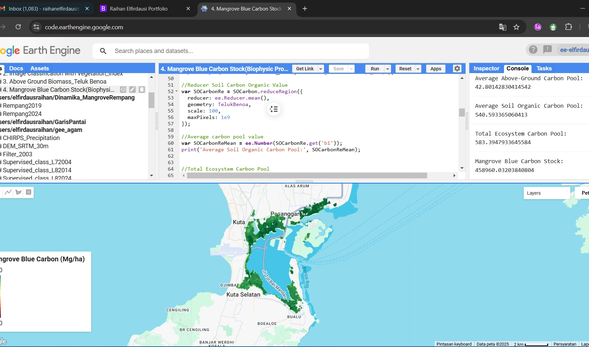

04 / Carbon & land use
Mangrove carbon mapping in Benoa Bay
Combining remote-sensing outputs, biomass data, and soil organic carbon information to explore mangrove carbon stocks.


The question behind the map.
This coursework exercise focuses on mangroves in Benoa Bay, Bali. It explores how satellite imagery and supporting datasets can be combined to map estimated carbon stocks.
How I approached it.
Data acquisition and processing used the Google Earth Engine JavaScript API with Sentinel-2 imagery and vegetation indices. The original exercise combines community biomass datasets and Harvard soil organic carbon data, with carbon conversion references identified as SNI 7724:2011 and Fourqurean et al. (2019).
What the work shows.
The outputs include a mangrove carbon stock map and supporting processing views. Interpreting the totals requires checking the biomass components, conversion factors, units, and soil depth represented by each input dataset.
Reading the results
Coursework associated with Geoaccess Indonesia. Carbon estimates depend on the underlying datasets, their spatial resolution, and carbon pool definitions; they are not a verified carbon credit inventory.
Supporting materials
A closer look.
Maps and processing views from this project. Select an image to view it at a larger size, or use the arrow keys to move through the gallery.